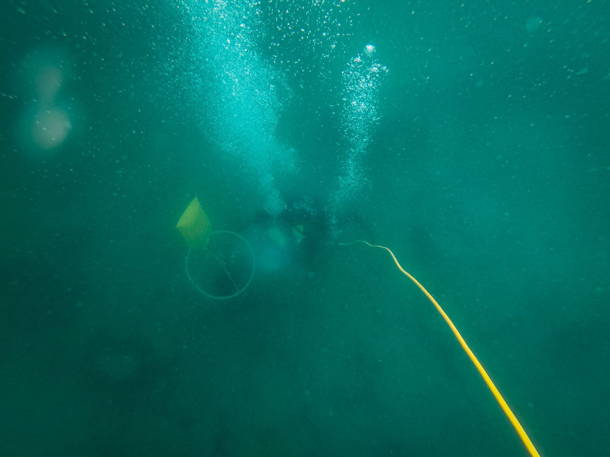
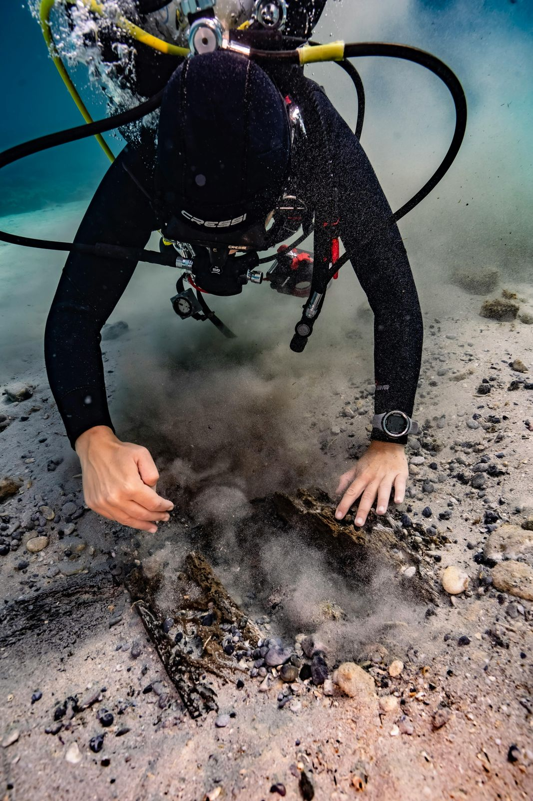

Finden, was im Wasser verloren ging.
Systematische Suche nach einem festgelegten Raster, dokumentiert mit Positionen. Für Behörden, Polizei, Unternehmen und Private.
Suchen mit System statt auf gut Glück
Der Erfolg einer Suche hängt von der Methode ab. Wir legen vor dem Einsatz das Suchgebiet fest, teilen es in Bahnen oder Sektoren auf und arbeiten diese vollständig ab. Jeder abgesuchte Bereich wird protokolliert.
So wissen Sie am Ende nicht nur, ob ein Objekt gefunden wurde, sondern auch, welche Fläche mit welcher Methode abgesucht ist. Das ist besonders wichtig bei Suchaufträgen von Behörden und Polizei.
In Schweizer Seen ist die Sicht oft gering und der Grund schlammig. Wir arbeiten deshalb auch bei Nullsicht mit tastender Suche und Leinenführung.

Was wir suchen und bergen
- Gegenstände für Polizei und Untersuchungsbehörden
- Messgeräte, Sensoren, Datenlogger und Werkzeug
- Baumaterial und verlorene Teile auf Baustellen
- Fahrzeuge und Boote: Lokalisieren und Anschlagen für die Hebung
- Anker, Ketten, Bojensteine
- Schlüssel, Schmuck, Mobiltelefone und Drohnen für Private
Suchverfahren je nach Lage
Bahnensuche
Parallele Bahnen entlang gespannter Leinen, geeignet für grosse, flache Flächen.
Kreissuche
Suche um einen Fixpunkt mit wachsendem Radius, wenn der Verlustort ungefähr bekannt ist.
Tastsuche bei Nullsicht
Systematisches Abtasten mit Leinenführung, wenn keine Sicht vorhanden ist.
Was Sie erhalten
- SuchprotokollAbgesuchte Fläche, Methode, Tiefe, Sicht und Zeitraum.
- FundpositionLage des Fundes mit GPS-Position und Fotos am Fundort.
- Bergung oder ÜbergabeBergung des Objekts oder Markierung für die Hebung durch Dritte.
- VertraulichkeitBefunde und Aufnahmen gehen nur an den Auftraggeber.
Grenzen
- Keine PersonenrettungBei Personen im Wasser sofort 117, 118 oder 144 alarmieren.
- Keine ErfolgsgarantieWir garantieren eine vollständige und dokumentierte Suche, nicht den Fund.
- Schwere LastenGrosse Objekte schlagen wir an und heben sie zusammen mit einem Kran- oder Bergeunternehmen.
- Militärische MunitionWird nicht berührt, sondern den zuständigen Stellen gemeldet.
Suche beauftragen
Je genauer Sie Ort und Zeitpunkt des Verlusts kennen, desto kleiner das Suchgebiet und desto tiefer die Kosten.